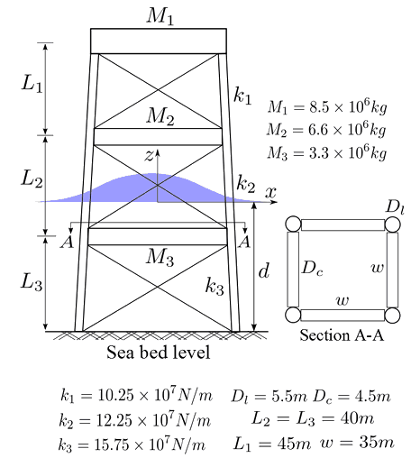
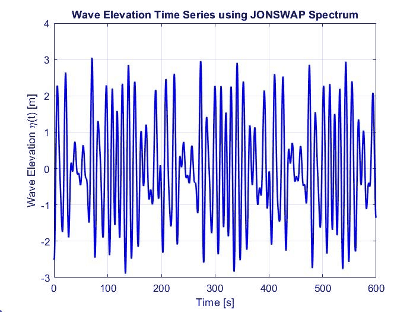
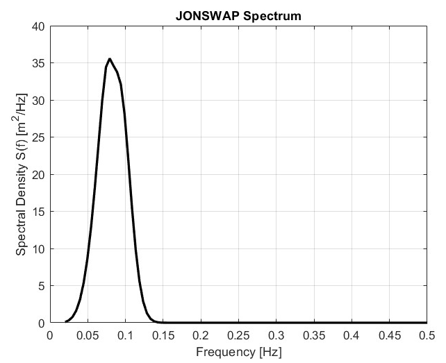

Dynamic analysis of an offshore platform under wind and wave loading
I developed a MATLAB analysis of a fixed jacket platform in 50 m of water under random wind and wave loading. Using the three-mass model supplied in the course project, I generated environmental load histories and solved the platform's dynamic response.


Wind loading used a logarithmic velocity profile with 15 m/s at 90 m and turbulence generated from the Kaimal spectrum. Wave loading used a JONSWAP spectrum with a 6 m significant wave height and a 12 s peak period. I calculated water particle velocities and accelerations using linear wave theory, then applied the Morison equation to obtain forces on the legs and braces.


I assembled the equations of motion, calculated natural frequencies of 1.88, 5.58 and 9.82 rad/s, and solved the response using the Newmark-beta method in modal coordinates. Over the 600 s simulation, the wave force at the lowest mass reached approximately 350 kN and the maximum top displacement was approximately 6 mm.

Additional figures

